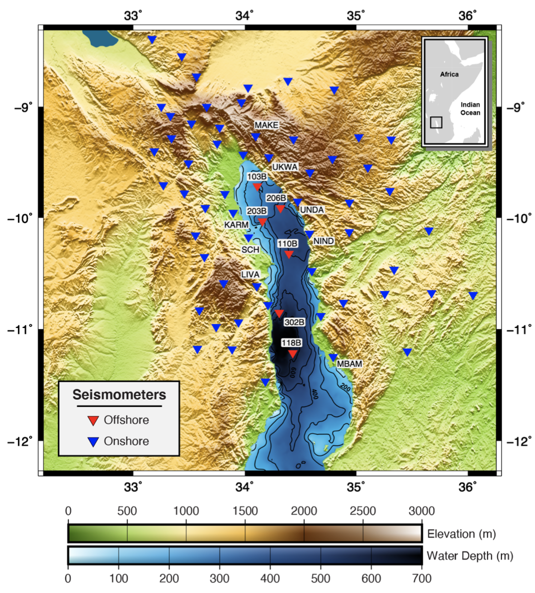

Motivation
The Malawi Rift sits at the southern end of the larger East African Rift system, a region over which the African plate is currently splitting into two tectonic plates. Continental plates are typically thick, cold, and strong, so a weakening mechanism is needed to break them up. Over much of the East African Rift system, intruding magma heated up from a mantle plume below (and erupting onto the surface as lava in many places) weakens the African plate and allows it to rift apart. However, very little surface evidence for volcanism exists along the Malawi rift, leading us to wonder what is responsible for its weakness: hidden magmatism below or some other mechanism? From 2013-2015, the SEGMeNT experiment blanketed the northern and central Malawi Rift with a network of 63 seismic stations as part of a multidisciplinary effort to better understand how a relatively cold, strong continental plate rifts apart in its early stages in the apparent absence of a weakening magmatism. However, sometimes we discover exciting new observations we weren’t even looking for. This network included 6 lake-bottom seismometers (LBS) deployed during 2015 within Lake Malawi (Nyasa). From the bottom of the fifth largest lake in the world, amongst the many earthquake recordings, we made an exciting and unexpected discovery: the clearest observations of
Wait… Microseisms? Seismic noise? Isn’t noise bad for clear earthquake recordings? Technically, that depends on your scientific question and what you consider signal.